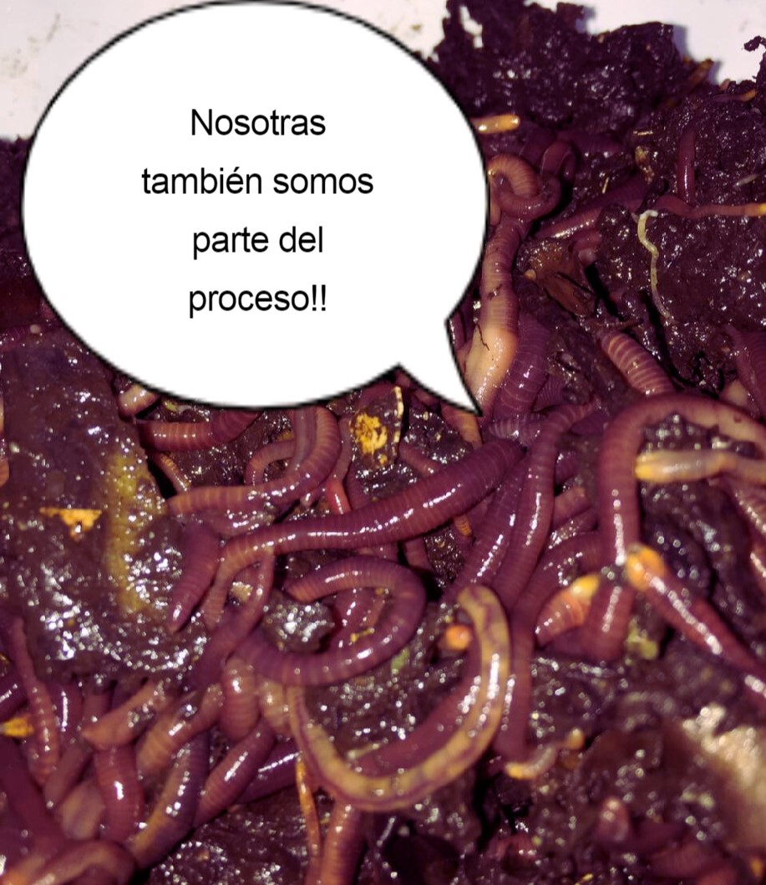

Ecompost
Inicio
Pagos
Tienda en línea
Ecompost
Inicio
Pagos
Tienda en línea
El humus de lombriz, en cualquiera de sus formas (ya sea líquido o sólido) es de vital importancia para el bienestar de la microbiota presente en el medio y ayudan el enriquecimiento en nutrientes como el Nitrógeno (N) Fósforo (P) y Potasio (K). Además, la presencia de lombrices siempre tendrá un efeto positivo para la vegetación ya que estos anélidos también mejoran la aireación del sustrato, sumado al enriquecimiento en nutrientes, tenemos un organismo perfecto para unirse al cuidado y mejora de nuestras plantas!
